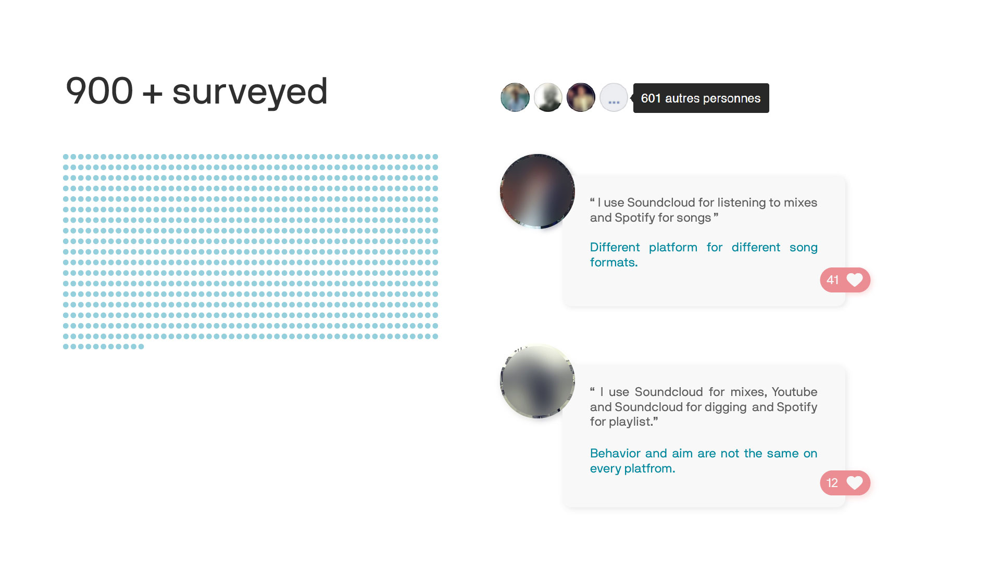

Initialement, l'idée était de répondre à une frustration personnelle. En effet, au fil des ans, comme beaucoup d'amateurs de musique, j'ai accumulé plusieurs comptes de streaming musical pour diverses raisons.
C'est pourquoi je passe quotidiennement de Youtube, Soundcloud, Deezer, etc. pour écouter ou rechercher de nouvelles musiques.
Outre la perte de temps, cette diversité entraîne d'autres problèmes. Dans le groupe de dj de mon école nous voulions faire des playlists en ligne communes mais nous n'arrivions pas à nous mettre d'accord sur la plate-forme.
Je voulais savoir si cette situation était récurrente et si oui, appliquer la méthodologie UX afin de proposer un produit cohérent.
L’User Experience Design Methodology (UXD) place l'utilisateur au centre de la conception du produit. Comprendre qui est impliqué, les frustrations, les contextes d'interaction, les objectifs et intégrer les résultats des recherches dans la conception pour répondre aux mieux aux besoins de l’utilisateur.
Je considère qu'après le premier développement, ce projet suivra une méthodologie agile sachant qu'il s'agit d'un projet numérique développé par une petite équipe. À chaque sprint, il sera possible de faire des petites recherches UX qui permettront d'éclairer les décisions et de valider la direction.
Commencer par un bon design, puis tester et apprendre au fur et à mesure pour le perfectionner.
Tout d'abord, pour en savoir plus sur la situation, j'ai créé une enquête sur une grande communauté de passionnés de musique :
Informations quantitatives, "quoi ?". Estimer la répartition des plateformes et le comportement des utilisateurs. En résumé, est-ce que le projet est nécessaire à la communauté.
Informations qualitatives, "pourquoi ? Comprendre les raisons derrière ce changement.



Maintenant que nous connaissons les objectifs, nous devons fixer la manière de les mesurer. Les mesures nous aideront à voir quelle version du produit est la meilleure.

J'utilise les résultats de mes recherches pour commencer à décrire mon futur produit. Pour ce faire, je décris les actions de l'utilisateur dans la future application idéale par des User stories.
Pour les trouver, je réfléchis à des solutions basées sur le besoin de l'utilisateur et mes idées. Je regroupe les User stories par thème pour donner un sens à tout cela. Ensuite, je commence à établir des priorités pour répondre à la principale proposition de valeur en premier lieu.
Fonctionnalités du produit:
...
Nous sommes maintenant prêts à proposer des designs cohérents. Mais avant de plonger dans une proposition, il est plus intéressant de diverger. Certaines idées seront inutilisables, mais toutes peuvent être utiles.

J'ai réalisé sur Figma un prototype basse-fidélité de l'application en me basant sur les croquis de chaque écran. Il sera utilisé pour essayer l'application à distance avec les utilisateurs.
Les utilisateurs ont tendance à être plus honnêtes avec les prototypes basse-fidélité, cela montre que vous êtes toujours ouvert pour discuter de la conception.

User population, situations.
La population d'utilisateurs est sélectionnée à l'aide de critères spécifiques afin de limiter le risque d'éviter une catégorie d'utilisateurs et de comprendre plus profondément pourquoi certains utilisateurs ont échoué. De plus, nous aurions pu définir différentes situations à tester, comme l'application d'une contrainte de temps ou non.
Scenario test.
5 scénarios ont été testés par chaque utilisateur. Ils regroupent les principales actions que l'on peut imaginer avec l'application.
Pendant le test, l'utilisateur doit parler pour exprimer son activité mentale.
L'expression de l'utilisateur est d'une grande valeur car c'est une opportunité de découvrir directement pourquoi il y a un problème.

Les tests ont tous été réussis (taux d'achèvement de 100%). C'est un signe que cette conception est un bon début. Néanmoins, les utilisateurs ont souligné certains points de confusion.
Qualitative research. User interviews.
Après le test, j'ai eu un entretien avec chaque utilisateur. L'occasion pour lui de proposer des solutions et pour moi de clarifier certains points.
Qu'est-ce qui aurait amélioré l'application ?
Principales recommandations:
Mise en œuvre des changements.
Ici, les changements ont été relativement mineurs et rapides à intégrer, je suis donc passé directement à la partie création. Sinon, j'aurais pu faire une nouvelle version du prototype low-fi et un autre test utilisateur. À ce stade, il est facile de faire des changements.
User population, situations.
MMaintenant que je suis plus confiant dans mon design, cela vaut la peine de développer la charte graphique.
Pour commencer, j'ai examiné les différentes tendances des interfaces utilisateur sur les plateformes de streaming et j'ai choisi des éléments. Il n'est pas nécessaire de réinventer la roue et en utilisant des standards, l'utilisateur se sentira moins perdu.
La charte graphique assurera la cohérence de notre application : Typographie, espacement, couleur, éléments de l'interface utilisateur, états, logo.
Ici, l'interface utilisateur est minimaliste/flat design. L'application met en évidence les couvertures de playlist que l'utilisateur peut modifier. Elles donnent de la personnalité à la page. Toutes les icônes ont été créées dans Illustrator et transférées sur Figma. Les couleurs ont été choisies à l'aide de l'outil material.io color. Bleu clair et rouge vif pour un visuel frais et énergique.


Pour développer efficacement la solution, nous avons besoin d'un plan qui fixe nos priorités.
Il est basé sur le premier plan que nous avons établi (partie 2.) mais nous affinons (grooming) les User stories en besoin plus petits et plus précis si nécessaire. Une User story peut impliquer de nombreuses choses comme un champ de recherche, un filtre, une page de résultats de recherche, etc.
Techniquement, l'application utilisera principalement les API des différentes plateformes : API Spotify, API Deezer, API Soundcloud, etc.
Le design n'est jamais définitif et peut toujours évoluer en dialogue avec les développeurs et en fonction des contraintes techniques.